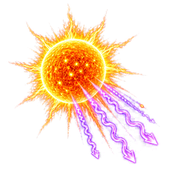
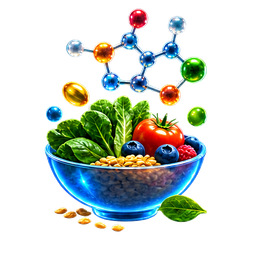
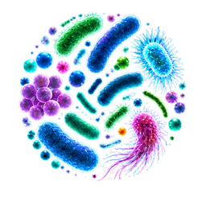

1 EXPOSOME IMPACTS
External & Internal Stressors

UVRadiationAir Pollution(PM2.5)
PsychologicalStress

NutritionDeficiencies
Dysbiosis(Microbiome)GeneticSusceptibility
TOTAL EXPOSOME EXPOSUREEnvironmental, Lifestyle,
Psychological, Biological
Psychological, Biological
HAIR FOLLICLE DAMAGE
- Oxidative Stress
- Inflammation
- Hormonal Imbalance
- Mitochondrial Dysfunction
MELANOCYTE DYSFUNCTION
- Oxidative Stress
- Impaired Melanogenesis
- Stem Cell Exhaustion
- DNA Damage